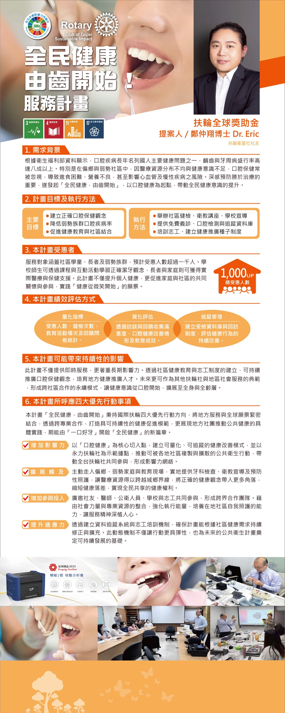

Proposer · Dr. Cheng Chung-hsiang (Dr. Eric) (member of the Inclusive Satellite Club)

According to data from the Ministry of Health and Welfare, oral diseases have long ranked among the leading health problems for Taiwanese people, with the prevalence of dental caries and periodontal disease as high as over 80%. Especially in remote and disadvantaged communities, the uneven distribution of medical resources and insufficient health awareness mean oral care is often neglected, leading to difficulty eating, malnutrition, and even raising the risk of cardiovascular and chronic diseases. Deeply aware that prevention is better than treatment, we launched "Health for All Begins with Teeth," using oral health as a starting point to drive a broader rise in public health awareness.
The service covers community schoolchildren, the elderly, and disadvantaged groups, with the number of beneficiaries expected to exceed one thousand. Teachers and students at schools can learn correct tooth-brushing concepts through courses and interactive activities, while the elderly and families can receive practical medical and care support. This project not only improves individual health but also promotes shared care and participation among families and the community, realizing the vision of "health begins with a smile."
Total beneficiaries: 1,000+
| Category | Indicator |
|---|---|
| Quantitative indicators | Number of beneficiaries, number of health checks, number of education events, and feedback survey statistics. |
| Qualitative evaluation | Collecting satisfaction, oral health improvement, and educational effectiveness through interviews and feedback. |
| Follow-up management | Establishing a database of examinees and a return-visit system to assess the lasting improvement of health behaviors. |
This project not only provides immediate services but also emphasizes long-term impact. By establishing community health education and a volunteer system, it can continuously promote oral care concepts and cultivate local health promotion talent. In the future, it can serve as a model for other Rotary clubs and regional social services, forming a sustainable model of cross-community collaboration that extends health awareness from the mouth to the whole body and all age groups.
Upholding Rotary International's four priorities, the "Health for All Begins with Teeth" project closely links local service with a global vision. Through cross-disciplinary collaboration, it builds a sustainable health promotion model and demonstrates the concrete practice of local clubs in advancing public health, aspiring to open a new chapter of "health for all" starting from "a healthy set of teeth."
Using "oral health" as a core entry point, the project establishes a quantifiable and trackable health improvement model. With the Club as a demonstration base, it advances public health actions that can be replicated and spread across communities, driving Rotary clubs throughout Taiwan to participate and forming a network of impact.
Proactively reaching into remote areas, disadvantaged families, and education sites, the project provides on-site dental examinations, health education, and preventive care, allowing medical resources to cross the urban-rural divide. It brings correct health concepts to more corners, narrowing the health gap and realizing the right to health shared by all.
The project broadly invites members, physicians, public health professionals, schools, and volunteers to participate together, forming a cross-sector collaboration team. By integrating social forces and professional resources, it strengthens execution capacity, cultivates local communities' ability to care for themselves, and plants the spirit of service deep in people's hearts.
By establishing a data-tracking system and a volunteer training mechanism, the project ensures it can be continuously revised and expanded according to community health needs. This dynamic mechanism not only makes the action more flexible but also lays a sustainable foundation for future public health projects.
Jingmin No. 1: 20-minute testing, high scalability and connectivity, lightweight design, precise and sensitive, suitable for multiple fields.